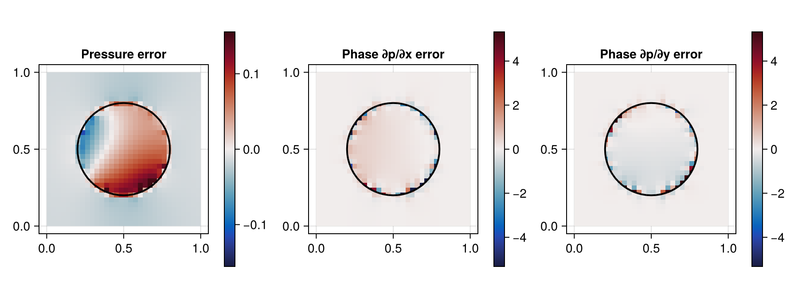
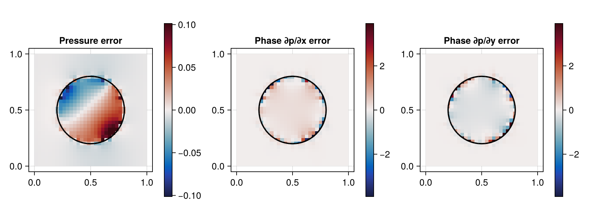
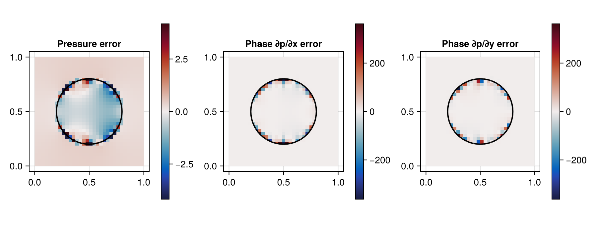
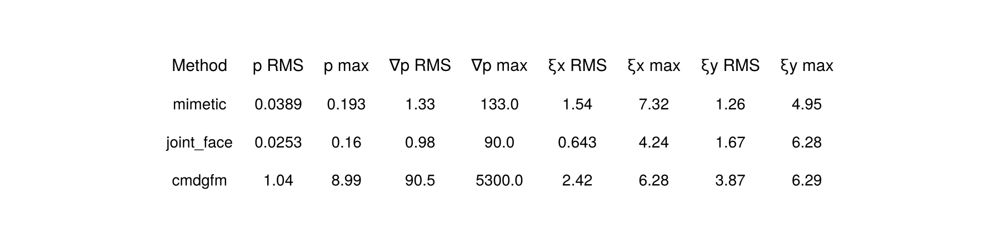

12 – Manufactured Poisson projection
A periodic two-phase manufactured solution compares pressure and phase-gradient errors across three projection methods.

At a glance
| Physics | Manufactured two-velocity projection on the periodic unit square, with liquid/gas densities (1000, 1) and a circular liquid region of radius 0.3 centred at (0.5,0.5). This is a single projection, not a time-dependent Navier–Stokes run. |
| Algorithms | A uniform resolution × resolution mesh and :lhf interface reconstruction; no AMR. Default :mimetic uses the jointly fitted smoothed-aperture variant, MINRES and a Cholesky block preconditioner. :joint_face changes the mimetic row layout; :cmdgfm uses CMDGFM, BiCGSTAB and a tree-GMG/active-jump-ILU block preconditioner. |
| Worth varying | resolution=32 changes the uniform grid; density=(1000.0,1.0) changes the two phase coefficients; method=:mimetic selects the projection (:joint_face and :cmdgfm are also accepted); tolerance=1e-9 and max_iterations=5000 control the solve; visualize=false disables the viewer. |
| Validated against | Gauge-aligned pressure and physical phase gradients are compared with the manufactured fields. At resolution=32, pressure RMS/max errors are 0.0388801/0.192510 for :mimetic, 0.0253219/0.160006 for :joint_face, and 1.04378/8.98783 for :cmdgfm. |
| Cost | :docs and :default both solve all three methods at resolution=32 (1024 cells); image dimensions differ. In a shared single-thread gallery process, setup and solve took 11.73 s (:mimetic), 0.67 s (:joint_face), and 3.19 s (:cmdgfm); incremental generator compilation, including rendering, was 31.28 s. |
Setup
Let r²=(x−0.5)²+(y−0.5)². The pressure is continuous at the interface but has a phase-dependent gradient:
\[p_*(x,y)=\sin(2\pi x)+\cos(2\pi y) +40\,(r^2-0.3^2)(x-y)\,\mathbf 1_{r<0.3}.\]
The predictor is the manufactured divergence-free phase velocity plus ∇p*/ρ, and the single projection uses Δt=1. Periodic pressure has an arbitrary constant; the plotted pressure error subtracts its cell-volume-weighted mean. The phase-gradient plots show errors in the physical ∇p, not the density-scaled jump ξ=[∇p/ρ]. See the method reference for the staggered discretization, CMDGFM and mimetic projection.
Run
From the repository root:
include("examples/12_manufactured_poisson/manufactured_poisson.jl")
run = run_example(resolution=32, method=:mimetic)
println(run.stats)
println(run.errors)julia --project=examples examples/12_manufactured_poisson/make_figures.jl
julia --project=examples examples/12_manufactured_poisson/manufactured_poisson.jlResults
The hero shows gauge-aligned pressure error and the x and y phase-gradient errors for :mimetic. The interface is outlined; each staggered gradient is clipped to its liquid and gas PLIC regions. For each method, pressure colors saturate at ± four pressure RMS errors and both gradient components share a range of ± four phase-gradient RMS errors; scales differ between methods to reveal structure, so use the table for maxima.

The :joint_face variant uses face-row selection.

The CMDGFM solve uses a different pressure/jump system.

At resolution=32, the phase-gradient RMS/max errors are 1.331/132.96 (:mimetic), 0.9798/89.98 (:joint_face), and 90.55/5304.83 (:cmdgfm). Pressure RMS uses total cell volume; gradient RMS uses phase-fraction-weighted dual-face volumes, with its maximum excluding nearly absent phases. The table also reports density-scaled jump errors on mixed faces.
Variations
run_example(resolution=64, method=:mimetic) # finer uniform mesh
run_example(resolution=32, method=:cmdgfm) # conservative ghost-fluid projection
run_example(resolution=32, density=(100.0, 1.0)) # change density contrastA genuine convergence study must repeat several resolutions and report the actual error norms and observed rates; a single generated map does not establish an order.
Files
- manufactured_poisson.jl: manufactured fields, solvers and error calculations.
- make_figures.jl: three method comparisons and error table.
assets/: generated PNGs.